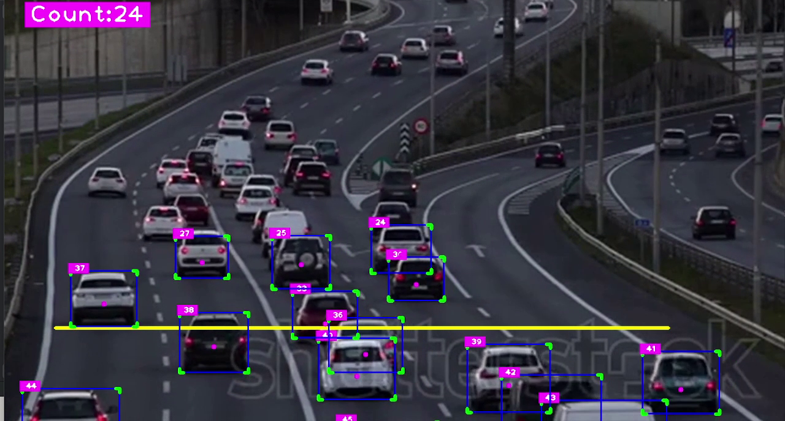
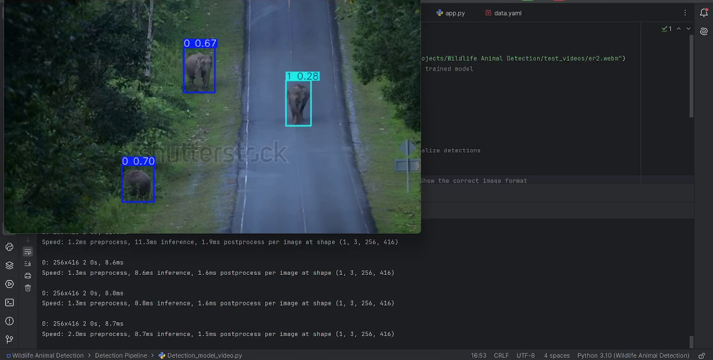
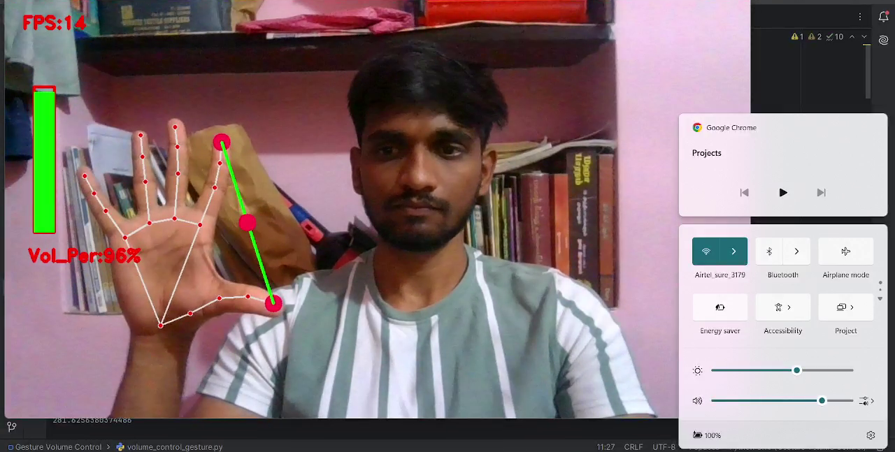
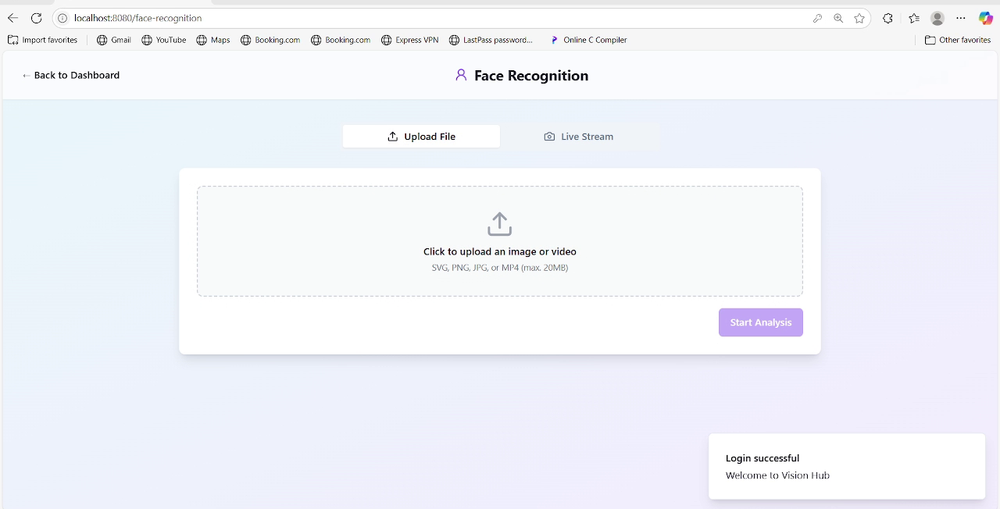
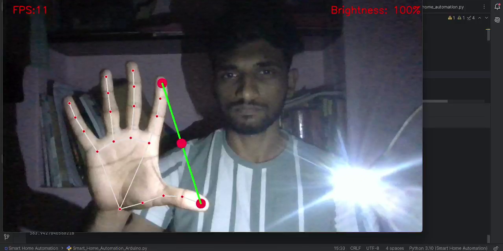

Computer Vision Projects
Computer Vision and AI

- Objective: Developed a system to automatically count vehicles in real-time using computer vision, enabling efficient traffic monitoring and analysis.
- Technology: Utilized OpenCV and Python, with object detection models like YOLO, to identify and track cars in video feeds or images or in live streaming
- Implementation: Processed video streams or images to detect vehicles, applied bounding boxes, and implemented a counting mechanism based on movement across defined regions.
- Applications: Supports urban planning, traffic management, and smart city initiatives by providing accurate vehicle count data for analysis and decision-making.
Skills: Python, Computer Vision, Real-Time Processing
Libraries and Frameworks Used: OpenCV, YOLO, NumPy, Matplotlib

- Objective: Built a computer vision system to detect elephants in two distinct environments—forests and roadsides—using a customized YOLOv8 model for wildlife conservation and human-elephant conflict prevention.
- Dataset: Curated a dataset of 500–600 images via Roboflow, annotated for two classes: elephants in forest settings and elephants on roadsides, ensuring robust training data.
- Technology: Leveraged YOLOv8 for real-time object detection, customized through transfer learning to accurately identify elephants in diverse scenarios.
- Implementation: Trained the model on the annotated dataset, optimizing for high accuracy in detecting elephants under varying lighting, backgrounds, and occlusions in forests and roadsides.
- Applications: Supports wildlife monitoring, early warning systems for road safety, and conservation efforts by providing reliable detection to mitigate human-elephant encounters.
Skills: Python, Computer Vision, Deep Learning, Data Annotation, Roboflow
Libraries and Frameworks Used: OpenCV, TensorFlow, NumPy, Matplotlib

- Objective: Developed a touchless volume control system using hand gesture recognition, enabling intuitive audio adjustments through computer vision.
- Technology: Utilized OpenCV and MediaPipe for real-time hand tracking and gesture detection, integrated with system audio controls via Python.
- Implementation: Detected specific hand gestures (e.g., raising/lowering hand or finger movements) to adjust volume levels, mapping gestures to predefined module(pycaw)
- Applications: Enhances user experience in smart devices, accessibility tools, and contactless interfaces, ideal for public kiosks or home automation systems.
Skills: Python, Computer Vision, Gesture Recognition, Real-Time Processing
Libraries and Frameworks Used: OpenCV, MediaPipe, Pycaw, NumPy

- Objective: Created a system to detect human faces and recognize emotions in real-time using computer vision, enabling applications in human-computer interaction and sentiment analysis.
- Technology: Employed OpenCV for face detection and a deep learning model(FER) to classify emotions such as happy, sad, angry, or neutral.
- Implementation: Processed video or image inputs to locate faces, extracted facial features, and predicted emotions with high accuracy using trained models.
- Applications: Supports use cases in mental health monitoring, customer feedback analysis, and interactive systems like virtual assistants or gaming.
Skills: Python, Computer Vision, Deep Learning, Emotion Recognition
Libraries and Frameworks Used: OpenCV, TensorFlow, Keras, NumPy, FER, mediapipe, Flask, flask_socketio, Reactjs

- Objective: Developed a system to control light brightness using hand gestures, leveraging Arduino and Python for a responsive and interactive lighting solution.
- Technology: Utilized Arduino microcontroller to manage LED brightness via PWM (Pulse Width Modulation) and Python for serial communication to send control signals.
- Implementation: Programmed Arduino to adjust LED brightness based on input signals received from a Python script, which processed user inputs or sensor data to determine desired brightness levels.
- Applications: Enables energy-efficient lighting control for smart homes, mood lighting systems, or interactive installations, enhancing user comfort and customization.
Skills: Python, Computer Vision, Gesture Recognition, Real-Time Tracking, arduino
Libraries and Frameworks Used: OpenCV, MediaPipe, NumPy, Serial